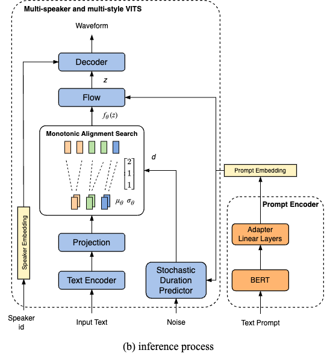
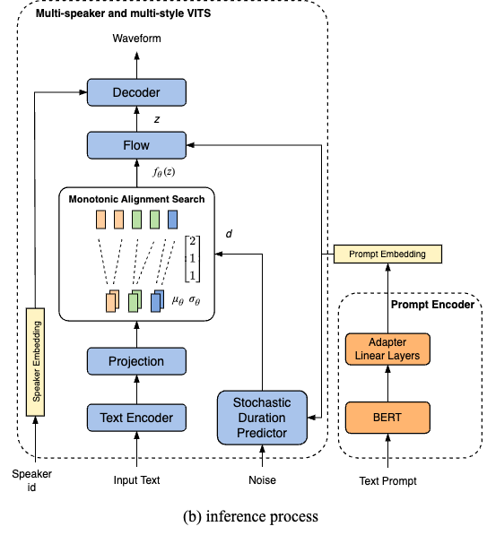

PromptStyle: Controllable Style Transfer for Text-to-Speech with Natural Language Descriptions
1. Abstract
Style transfer has shown improved performance in recent years. The style control is often restricted to discrete style categories and expressive speech recordings. However, in practical situations, users may be interested in transfer style with no reference speech in the target style just by typing text descriptions of desired styles. The text-guided content generation techniques have drawn wide attention recently. In this work, we explore the possibility of controllable style transfer with natural language descriptions. Specifically, we propose PromptStyle, a text prompt-guided cross-speaker style transfer system. PromptStyle consists of an improved VITS and a cross-modal style encoder. The cross-modal style encoder constructs a shared space of stylistic and semantic representation through a two-stage training process. Experiments show that PromptStyle can achieve the goal of style transfer with text prompts while maintaining relatively high stability and speaker similarity.
 
2. Audio Samples
The following parts are the audio samples on PromptStyle and two baseline systems. Note that we show PromptStyle from 2 parts as follows.
Performance on the Style Transfer: We aim to show that PromptStyle can control transfered style with different reference speech.
Ablation: We aim to verify the influence of the style embedding and speaker embedding added to different modules as conditions.
Style Control by Text Prompt: We aim to show that PromptStyle can control transfered style with different natural language descriptions.
2.1 Performance on the Style Transfer
| reference speech | target speaker | CST-TTS | GST-MLTTS | PromptStyle |
|---|---|---|---|---|
2.2 Ablation
| reference speech | target speaker | M1 | M2 | M3 | Proposed |
|---|---|---|---|---|---|
2.3 Style Control by Text Prompt
| style prompt | reference speech | control with reference speech | control with style prompt |
|---|---|---|---|
感到难以置信夹杂着赞许 Feeling incredulous mixed with a few admiration |
|||
真的很失望，很恼火，太气愤了 Utterly dismayed, frustrated, and incensed by the situation. |
|||
以凄凉和无助的语气恳求道 A poignant and helpless tone to the expression, with a sense of earnest entreaty |
|||
为他人取得好成绩感到开心 Feeling happy for others when they achieve good results. |
|||
温柔的语气包含着世间美好 The gentle tone contains the beauty of the world |
|||
以一种轻松诙谐的语气问道 asked in a light-hearted and witty tone |
|||
风趣诙谐又清晰的说明信息 Witty and humorous explanations that are also clear and concise convey information |